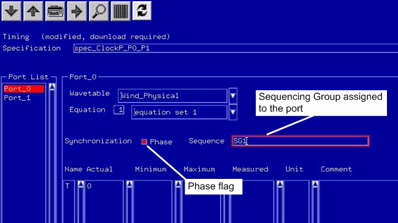

How to Synchronize Port Phases
You can synchronize the phases of different timing ports. These ports can be
- in the same sequencing group,
- or in different sequencing groups.
To synchronize different timing ports you set the Phase flag for the corresponding ports. The phase flag is set in the Spec Tool:
- Open the Spec Tool.
- Select the page of the port where you want to set the Phase flag.
- Set the Phase flag.
